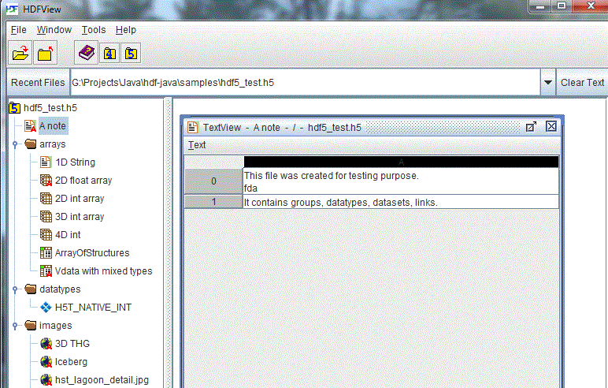

[Index] [1] [2] [3] [4] [5] [6] [7] [8]
This chapter provides information on editing text datasets in the TextView panel.
Datasets with data of type “String” are displayed in a Text Viewer window. The Text Viewer provides a scroller for a large string dataset. Users can scroll up or down and left or right, as needed, to view the full content of the dataset.
TextView shows the text of a one-dimension text dataset in rows of text areas. For multiple-dimension datasets, you can select one dimension to display using the “Open As” command from the TreeView. The following figure shows that two rows of 1-D text (dim[0] = 2) are displayed in separate text areas.

A dataset with string data
You can modify the text content by typing new text in the text area. The modified text is chopped based on the maximum length of the string dataset. A string dataset of variable length is not supported.
To copy and paste text between cells of a text dataset, first select the cell or cells containing the text you wish to copy and then press Ctrl+C on the keyboard. Then, begin editing the cell you wish to copy into by double clicking on that cell and finally, press Ctrl+V on the keyboard. The previously copied text is pasted into the new cell. If multiple cells were pasted into one new cell, the data will span multiple lines in the new cell.
To move text between cells, begin editing the cell containing the data you wish to move by double clicking on the cell. Highlight the text you wish to move and then press Ctrl+X on the keyboard. Finally, begin editing the cell you wish to move the text to by double clicking on the cell and press Ctrl+V on the keyboard. The previously cut text is pasted into the new cell.
To save changes made to the text dataset, choose "Save Changes" from the Text menu. To export the data to a text file, choose "Save to Text File" from the menu. Note: Currently, only the entire contents of the dataset can be exported to a text file.
[Index] [1] [2] [3] [4] [5] [6] [7] [8]